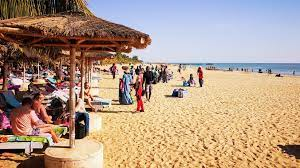

Saly Portudal!
Presentation
Saly est une zone de complexes balnéaires située sur la Petite-Côte, une région du Sénégal. Ancien comptoir commercial portugais, le village de Saly Portudal accueille des restaurants, le parcours de golf de Saly et un marché artisanal. Le long de la côte, à l'ouest, Saly Nord possède une plage bordée de palmiers. À l'est, à Saly Niakhniakhal, le front de mer regorge de restaurants et de villas. Des bateaux de pêche en eaux profondes regagnent les rives avec des voiliers, des marlins ou des thons
Les plages!
À 80 km au sud-est de la capitale de Dakar, c’est dans la ville balnéaire de Saly (non loin de Mbour ) que se trouvent les plages les plus connues du Sénégal, bordées de palmiers, de restaurants, bars et villas. Les plages de Saly sont propices à la baignade et aux sports nautiques comme la plongée et le jet-ski. Le front de mer de Saly regorge de plusieurs hôtels tout confort et attire de nombreux touristes tout au long de l’année. Saly est également réputé pour la pêche, son ambiance nocturne avec ses restaurants et ses bars ainsi que son golf
Les hotels!
Les hôtels de Saly Portudal bénéficient d'un accès direct à la plage et au port de plaisance. Ils sont nombreux dans lesquels nous en avons des 5 étoiles. Ils sont espacés, aérés et dispose d’un confort exponentiel qui ferait rêver tout le monde. Différentes activités sont organisés dans le but d’épanouir les vacanciers à savoir les spectacles de danse, des jeux de divertissement, chasse au trésor etc...